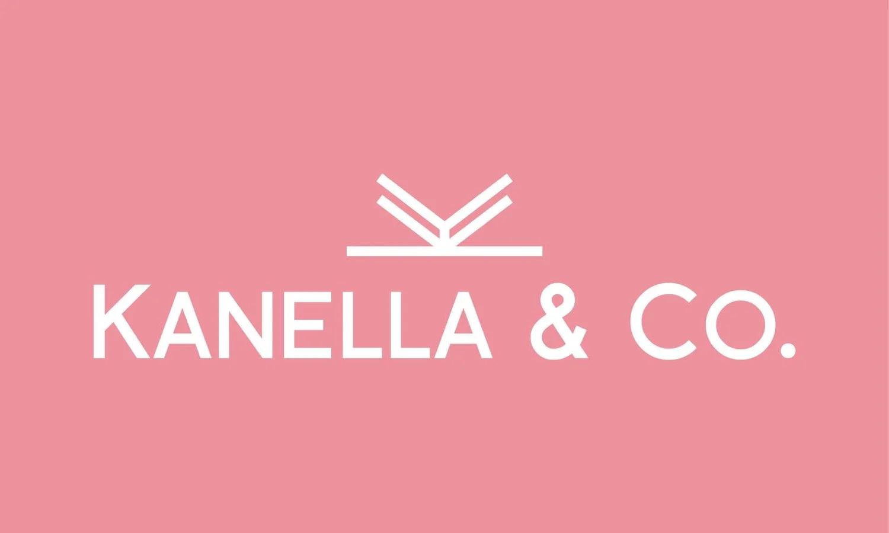
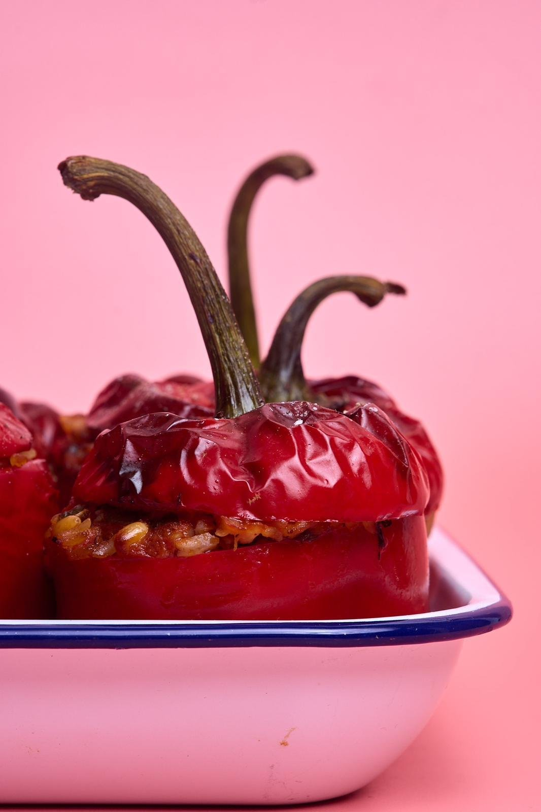
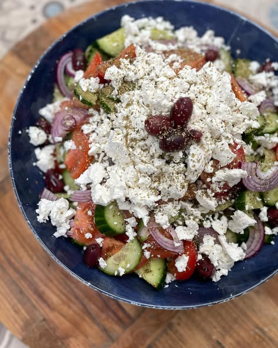

01
Speciality coffee
Our speciality, served with a Greek twist to café life.


106 Lordship Lane / East Dulwich, London
Your family run, Cypriot influenced, speciality coffee shop.
Kanella and Co is an independently owned cafe in south east London, specialising in coffee.
Inspired by Greek Cypriot food from our yiayia’s table. From her “Makaronia Tou Fournou” to her homemade Bougatsa, Cypriot culture is at the heart of Kanella.
A family run business with an affinity with Dulwich and Lordship Lane.

Speciality coffee, food inspired by family recipes and colourful salads. This is Kanella.
Our speciality, served with a Greek twist to café life.

From Makaronia Tou Fournou to homemade Bougatsa, our food has its roots at yiayia’s table.

Colourful bowls and generous platters, with plenty of Greek influence.
03 / Gather at Kanella
Host your private event with us!
We offer a variety of personal dining experiences from intimate private dinners to Greek grazing styles. Reach out for more info.